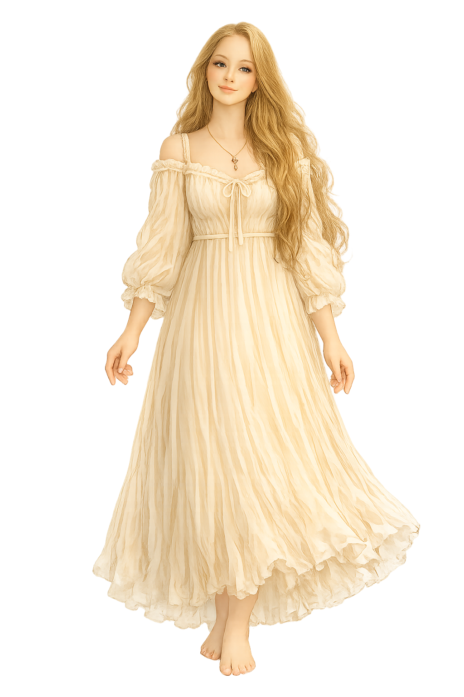

Первый хранитель
Таня
Хранитель выбора
Катя, привет.
У каждой истории есть начало.
Но почти никогда оно не выглядит особенным в тот момент, когда происходит.
Обычный разговор. Случайная встреча. Дорога домой. Люди, фотографии, смех, неловкие моменты. Кажется, всё это — просто маленькие эпизоды. Но именно из них постепенно складывается история, которую однажды начинаешь называть своей жизнью.
Мы решили собрать такие моменты в одну книгу.
Не только потому, что память со временем стирает детали. А потому, что каждому человеку иногда полезно увидеть собственную историю глазами тех, кто проживал её рядом.
На этих страницах ты встретишь не только воспоминания. Ты увидишь наши путешествия, людей, которые стали частью этой истории, и, возможно, увидишь себя такой, какой знаем тебя мы.
Но пока книга создавалась, часть страниц оказалась у разных хранителей. Каждый из них бережно хранит своё воспоминание и отдаст его только тому, кто сможет пройти его испытание.
Каждая история начинается с выбора. Поэтому именно я встречаю тебя первой.
Добро пожаловать в нашу историю.
Готова найти первую страницу?